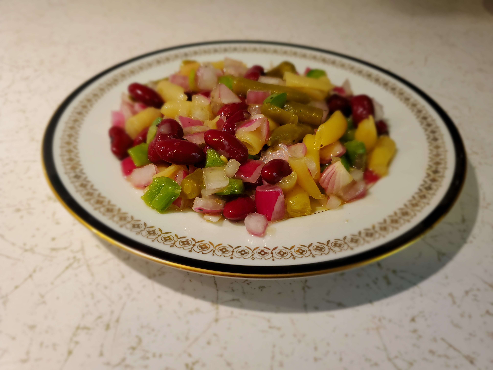

This is a recipe for "Hazel's 3 Bean Salad"
Ingredients
- One 16 oz. can of Bush's Best Dark Red Kidney Beans (DRAINED and RINSED).
- One 14.5 oz. can of Del Monte's Fresh Cut Green Beans (DRAINED).
- One 14.5 oz. can of Del Monte's Fresh Cut Wax Beans (DRAINED).
- One green pepper chopped.
- One large red onion chopped.
- Half cup of California Olive Ranch Extra Virgin Olive Oil.
- 2/3 cup of white distilled vinegar.
- 2/3 cup of sugar.
- One tsp. of salt.
- 1/4 tsp. of pepper.
Directions
- Place the extra virgin olive oil, white distilled vinegar, sugar, salt, and pepper into a jar with a tight fitting lid. (I use a 1 pint canning jar). Close the jar and shake vigorously to blend.
- Pour this mixture over the beans, green pepper, and onion.
- Let marinate for 2 hours or longer stirring occasionally.
- Enjoy
Download Recipe